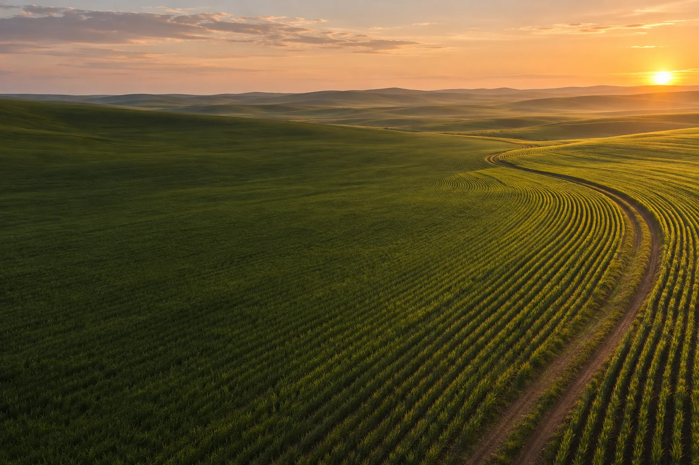
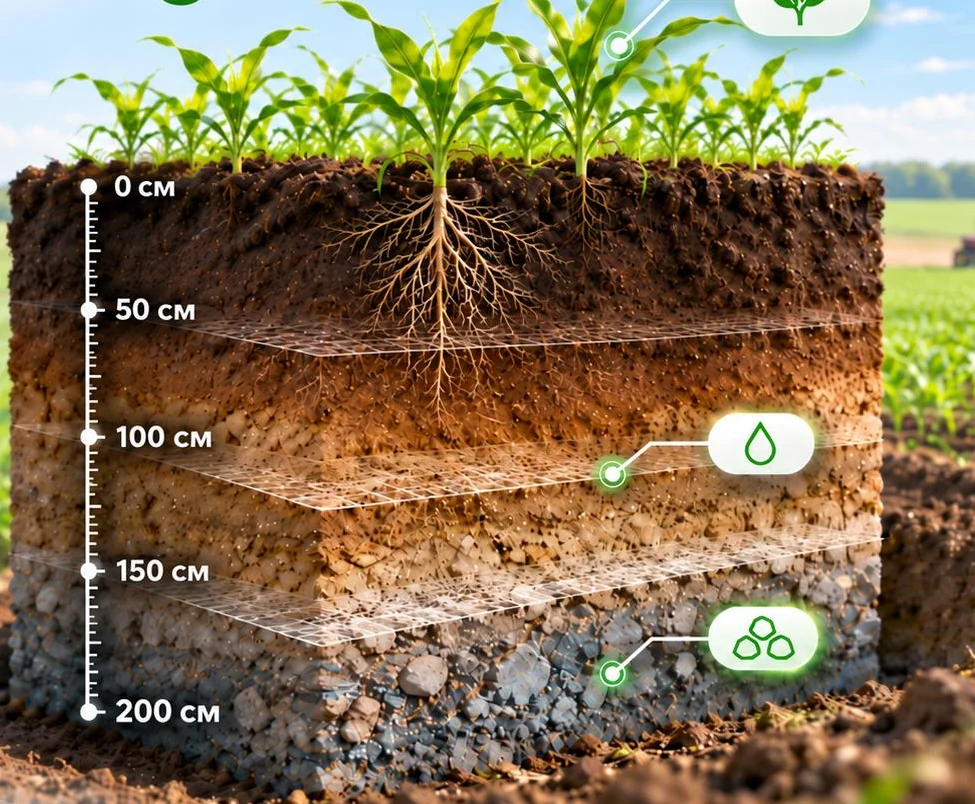
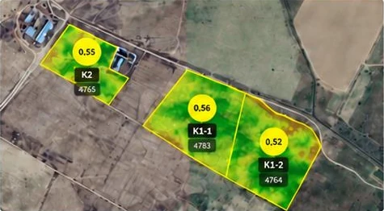
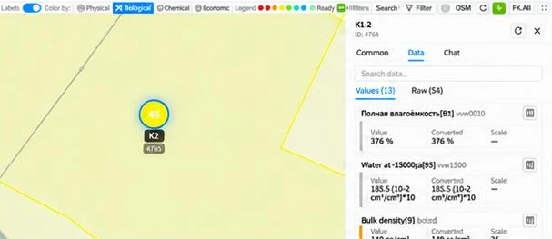
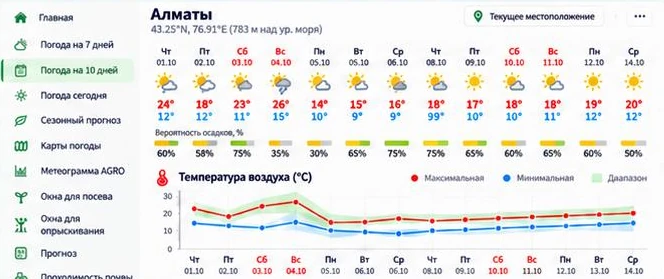
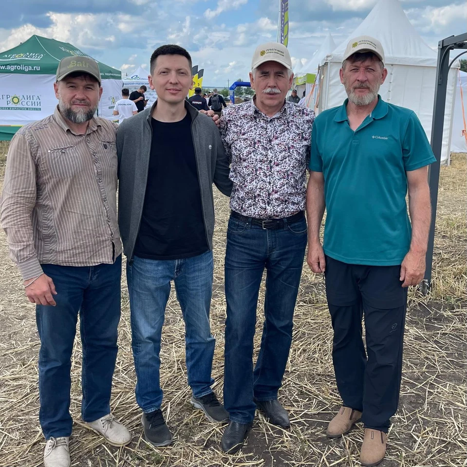

Лічбавая агранамічная платформа
Мяняем падыход
да кіравання полем
Дапамагаем зразумець, дзе і чаму гаспадарка губляе ўраджай і грошы ды што з гэтым рабіць ужо ў гэтым сезоне.
Як працуе AgroInn
Ад глебавага профілю
да рашэнняў у полі
Ушчыльненне, засаленне або нізкая вільгацяёмістасць глыбокіх слаёў глебы могуць стрымліваць рост каранёў і зніжаць ураджайнасць.

-
Будуем 3D-профіль глебы
Вывучаем слаі глебы на глыбіні 0–200 см, каб выявіць, што можа абмяжоўваць рост каранёў, даступнасць вільгаці і пажыўных рэчываў для раслін.
-
Супастаўляем даныя пра поле
Супастаўляем уласцівасці глебы са шматгадовымі данымі пра ападкі і вецер, рэльефам і экасістэмай поля.
-
Рыхтуем план дзеянняў
Аграномы і глебазнаўцы правяраюць высновы. Гаспадарка атрымлівае справаздачу, тэхналагічную карту і план работ. Гэтыя даныя выкарыстоўвае AgroInn-Agent.
-
Назіраем за полем увесь год
Сочым за станам глебы, умовамі надвор’я і развіццём пасеваў, каб своечасова заўважаць адхіленні.
Маніторынг палёў
AgroInn-Agent працуе разам з аграномам гаспадаркі
Агент аналізуе даныя па кожным полі, выяўляе рызыкі і дапамагае вырашыць, што праверыць і калі запланаваць работы.
Паглядзець дэманстрацыю
Стан пасеваў
Вегетацыйныя індэксы дапамагаюць заўважыць неаднароднасць пасеваў і выбраць участкі для агляду.

Ворны слой глебы
Уласцівасці слоя 0–30 см на дату аналізу, у тым ліку шчыльнасць складання і вільгацяёмістасць.

Надвор’е і час для палявых работ
Прагноз ападкаў і тэмпературы дапамагае выбраць час для сяўбы і іншых палявых работ.
Пра AgroInn
Навука для глебы
У AgroInn аграномы і глебазнаўцы працуюць разам з даследчыкамі, інжынерамі і спецыялістамі па машынным навучанні.
Вопыт каманды ў агранамічным кансультаванні ў пяці краінах
Фіналіст конкурсу 2025 года


Кантакты ў Беларусі
Давайце абмяркуем вашы палі
Раскажыце пра вашу гаспадарку. Разбяром задачу і абмяркуем, з якіх палёў пачаць.